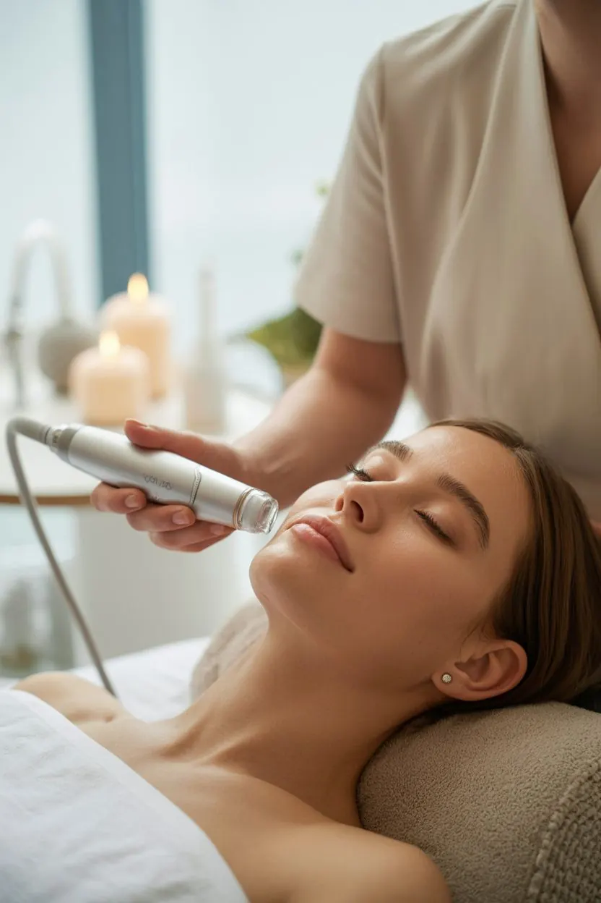
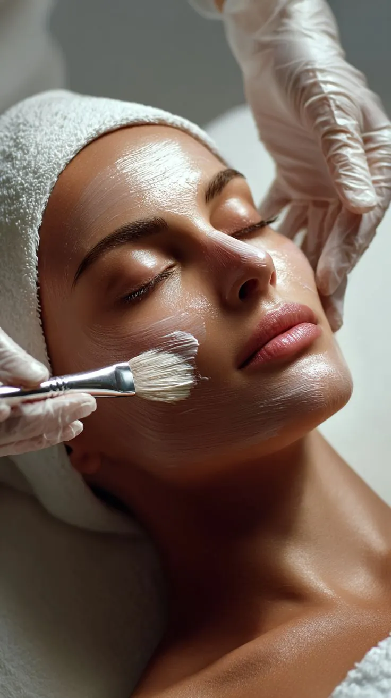

Rugalmasság és bőrfiatalítás
Mesotica ápolás az arc, a nyak és a dekoltázs változó igényeire.

A bőröd igényeire hangolva
Bőrfiatalítás, mélyhidratálás vagy célzott törődés a problémás bőrnek. A kezelést a bőröd aktuális állapotához és az otthoni szokásaidhoz igazítom.

Személyre szabott ápolás · 35 év felett
Növényi összetevők és célzott hatóanyagok a bőröd igényeihez igazítva. A megfelelő kezelést az aktuális bőrállapot alapján választjuk ki.
Érzékeny bőrre · 90 perc
Mélyhidratáló effect kezelés · 90 perc
Figyelem az arc kontúrjaira · 40 év felett
Peptidekre épülő kozmetikai ápolás a bőrfiatalítás és a feszesebb bőrkép támogatására. Az arc mellett a nyak és a dekoltázs is megkaphatja a személyes törődést.
90–120 perc
120–180 perc

Változhat a bőröd rugalmassága, hidratáltsága és érzékenysége. Az első lépés az alapos bőrállapot-felmérés: nem kell előre tudnod, melyik kezelésre van szükséged.
Mesotica ápolás az arc, a nyak és a dekoltázs változó igényeire.
Belico Hydro energy kezelés a vízhiányos, fakó bőr ápolásához.
Személyre szabott Skin regeneration kezelés és gondosan kiválasztott hatóanyagok.
Anti-akné ápolás és otthoni tanácsadás az átgondolt rutinért.
A módszert mindig a bőröd aktuális állapotával együtt választjuk ki.
Tű nélküli eljárás, személyre szabott hatóanyag-választással.
Fényalapú kozmetikai kezelés a bőrfiatalító ápolás részeként.
A kezelés lehetőségeit és menetét személyes egyeztetésen beszéljük át.
Célzott kozmetikai törődés, tisztítás és segítség az otthoni rutinhoz.
A cél a hidratáltabb, rugalmasabb bőr és az egyenletesebb bőrkép. A szalonban kapott ápolást személyre szabott otthoni tanácsok egészítik ki.
Ha egy 5 alkalmas kúra után nem vagy elégedett, a díj 50%-át visszatérítem.
Komplex törődés
Egymásra épülő kezelések, személyre szabott gondoskodás. A választást személyesen is átbeszéljük.
59 000 Ft
79 000 Ft
99 000 Ft
Vendégeim szavaival
„Korábbi rossz tapasztalatok miatt sokáig nem mertem kozmetikushoz járni, de ez az itt töltött első alkalmat követően megváltozott. A bőröm minden kezelés után szinte ragyog, remekül érzem magam, és Eliza segítségével sikerült kialakítanom a helyes, bőrtípusomnak megfelelő arcápolási rutint. Szívből ajánlom!”
Fruzsi
„Eliza nagyon kedves, csupaszív kozmetikus, a kozmetika csodaszép, tiszta, hangulatos, mindig örömmel járok ide vissza. Legutóbb a 10 alkalmas arcfiatalító kezelést vettem igénybe, és az eredmény magáért beszél, azóta több pozitív visszajelzést is kaptam ismerőseimtől. Csak ajánlani tudom Elizát!”
Magdi

Telefonon vagy az űrlapon keresztül kereshetsz. Hétfőtől péntekig 9:00 és 16:00 között, előre egyeztetett időpontban várlak.
Megismerem a bőröd állapotát, arcápolási szokásaidat és termékeidet. Ezek alapján állítom össze a kezelési tervedet.
A személyre szabott terv alapján végzem el a kezelést, amelyet relaxáló arcmasszázs egészít ki.
Gyakorlati tanácsokkal és személyre szabott termékajánlásokkal segítek az otthoni bőrápolási rutinod kialakításában.
Szeretettel várlak
Kérdésed van a kezelésekről, vagy időpontot szeretnél egyeztetni? Keress bizalommal, és segítek megtalálni a számodra legjobb megoldást!
Prototípus: a telefon és az e-mail oktatási mintaadat. Éles használat előtt cserélendő.